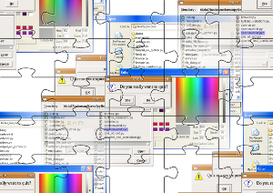

Tkinter
Tkinter Buttons
 The Button widget is a standard Tkinter widget, which is used for various kinds of buttons. A button is a widget which is designed for the user to interact with, i.e. if the button is pressed by mouse click some action might be started. They can also contain text and images like labels. While labels can display text in various fonts, a button can only display text in a single font. The text of a button can span more than one line.A Python function or method can be associated with a button. This function or method will be executed, if the button is pressed in some way.
Example for the Button Class
The following script defines two buttons: one to quit the application and another one for the action, i.e. printing the text "Tkinter is easy to use!" on the terminal.
from Tkinter import *
class App:
def __init__(self, master):
frame = Frame(master)
frame.pack()
self.button = Button(frame,
text="QUIT", fg="red",
command=frame.quit)
self.button.pack(side=LEFT)
self.slogan = Button(frame,
text="Hello",
command=self.write_slogan)
self.slogan.pack(side=LEFT)
def write_slogan(self):
print "Tkinter is easy to use!"
root = Tk()
app = App(root)
root.mainloop()
The result of the previous example looks like this:

Dynamical Content in a Label
The following script shows an example, where a label is dynamically incremented by 1 until a stop button is pressed:
import Tkinter as tk
counter = 0
def counter_label(label):
counter = 0
def count():
global counter
counter += 1
label.config(text=str(counter))
label.after(1000, count)
count()
root = tk.Tk()
root.title("Counting Seconds")
label = tk.Label(root, fg="dark green")
label.pack()
counter_label(label)
button = tk.Button(root, text='Stop', width=25, command=root.destroy)
button.pack()
root.mainloop()
The result of the previous example looks like this: